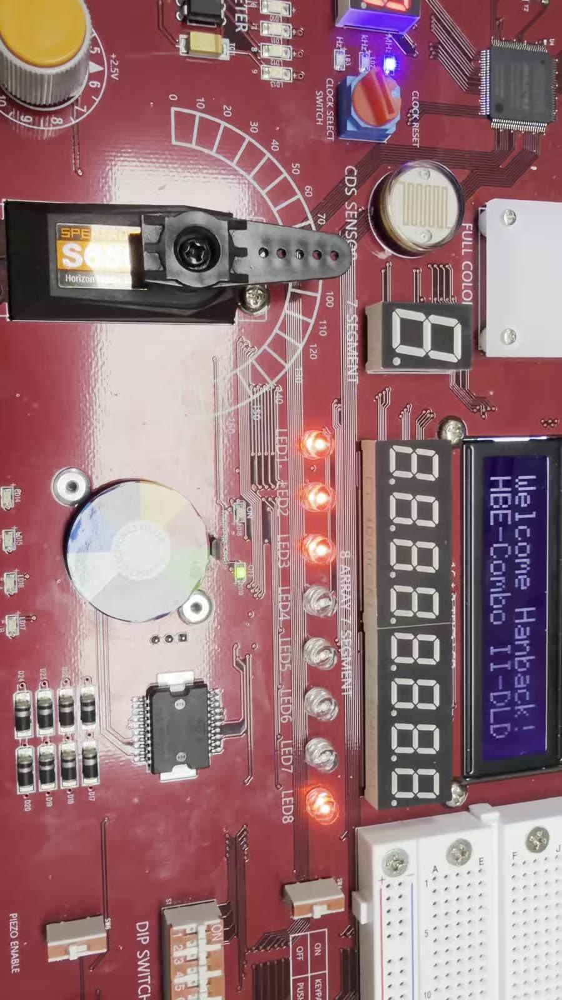
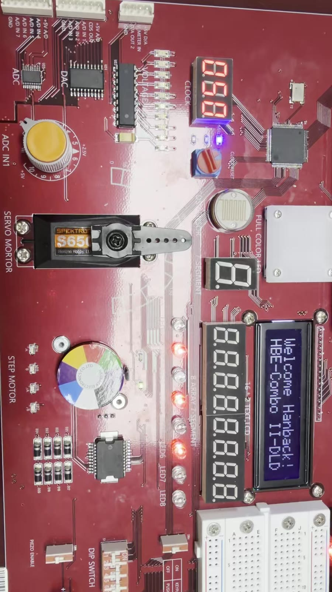
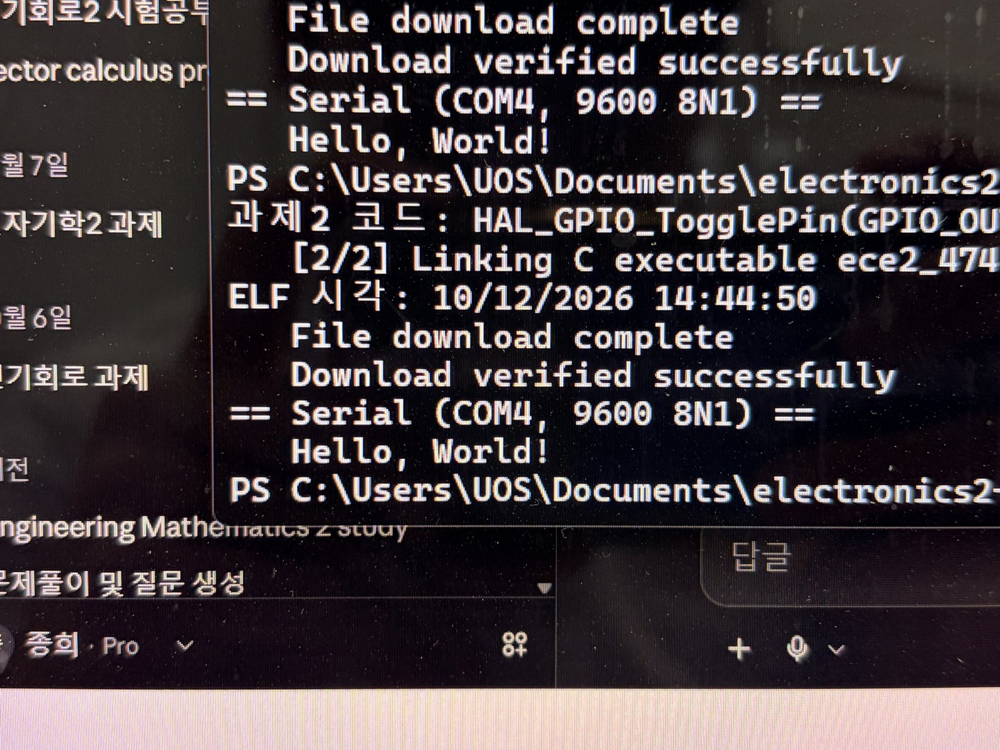
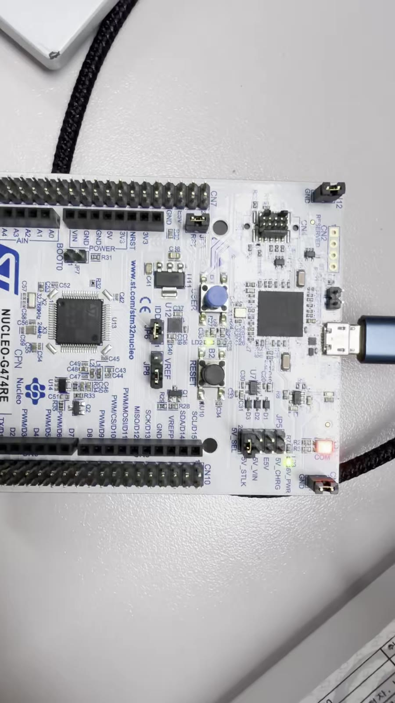
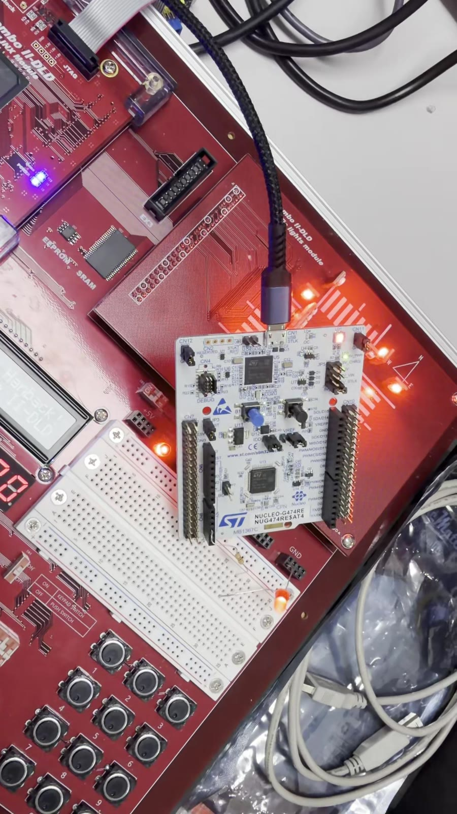

| 항목 | 값 |
|---|---|
| 저장소 | https://github.com/hyeongjonghee/electronics2-LABs (Public) |
| 제출 태그 | lab4-submit — 이 보고서(HTML · PDF)와 시연 자료가 들어간 최종 커밋을 가리킴 |
| 실험 전 보고서 태그 | lab4-prelab (커밋 d97b38a), 설계 소스 커밋 f578e2d |
| LAB4 경로 | LAB4/circuits/LAB4-01~02/ (src · sim · constraints · results), LAB4/stm32/task1~2/, LAB4/evidence/ |
| STM32 기반 프로젝트 | Glaysia/ece2_474 v1.1.0 = dd94f01. 학생이 바꾼 파일은 Core/Src/ece2_474_routine.c 하나 |
조교 안내에 따라 이번 실험의 시연 대상은 MCU의 Hello World 출력, STM32_0 과제1, 과제2였고, 세 가지 모두 2026-10-12 실습에서 조교 확인을 받았다. 이때 조교가 VS Code 디버거로 변수 값을 바꾸어 LED 간격을 바꾸는 시연도 함께 했다(3장 ⑧). FPGA 두 회로는 시연 대상이 아니어서 Vivado 시뮬레이션과 해석을 중심으로 보고하며, 보드에서도 직접 확인했다. FPGA는 실험 전 보고서 이후 교재 핀표와 대조해 BCD 변환의 출력 배치를 교재에 맞게 고쳤고, 보드용 최상위 모듈까지 검사하는 테스트벤치를 추가했다.
| # | 실험 | 시뮬레이션 | 최상위 연결 TB | 자원 / 빌드 | 보드 |
|---|---|---|---|---|---|
| 1 | 4비트 곱셈기 (FPGA) | PASSXSim · Icarus 256쌍 | PASS256 | LUT 16 · FF 0 · IOB 16 | ✔ 직접 확인 |
| 2 | BCD→이진수 (FPGA) | PASSXSim · Icarus 100+156 | PASS256 | LUT 7 · FF 0 · IOB 16 | ✔ 직접 확인 |
| 3 | Hello World + 과제1 (MCU) | 호스트 모의 실행 1→2→4→8→1 s | FLASH 25,824 B (4.93%) | ✔ 조교 시연 | |
| 4 | 과제2 · 외부 LED PB0 (MCU) | 호스트 모의 실행 · PB0만 변경 | FLASH 25,824 B (4.93%) | ✔ 조교 시연 | |
mult_4bit, bcd_conv)만 검사한다. 스위치 → LED 연결까지 확인하는 tb_top.sv를 두 회로에 추가했다.STM32_Programmer_CLI -c port=SWD -w … -v -rst)로 같은 ELF를 올렸다.4비트 수 두 개를 곱해 8비트 결과를 내는 조합회로를 만들고, 256개 입력 조합 전체에서 결과가 맞는지 Vivado 시뮬레이션으로 확인한다.
4비트 부호 없는 수의 최대 곱은 \(15 \times 15 = 225 < 2^8\)이라 결과는 8비트면 충분하다. 곱셈은 세로 곱셈과 같이 부분곱을 더해 만든다 [1].
$$P = A\cdot B = \sum_{i=0}^{3} b_i\,(A\cdot 2^{i})$$교재 「Combo II DLD 장비를 이용한 디지털 논리 회로 설계」 2.3절 p.321의 핀표와 한 줄씩 대조했다. 16개 핀 모두 일치한다.
| 신호 | 교재 p.321 | 우리 XDC | 판정 |
|---|---|---|---|
| a[3:0] | Y1 · W3 · U2 · T1 (DIPSW_1~4) | sw[7:4] → Y1 · W3 · U2 · T1 | 일치 |
| b[3:0] | W4 · W1 · V4 · U4 (DIPSW_5~8) | sw[3:0] → W4 · W1 · V4 · U4 | 일치 |
| m[7:0] | L4 · M4 · M2 · N7 · M7 · M3 · M1 · N5 (LED1~8) | led[7:0] → 같은 순서 | 일치 |
| I/O 표준 | LVCMOS33 | LVCMOS33 | 일치 |
`timescale 1ns/1ps
// 출처: Glaysia/ece2_474 v1.1.0 docs/FPGA_additional.md (1. 4비트 곱셈기)
// 4비트 곱셈: 입력 두 개를 곱해 8비트 결과를 만듭니다.
module multiply_unsigned #(parameter WIDTH = 4)(
input wire [WIDTH-1:0] a, b,
output wire [2*WIDTH-1:0] product
);
assign product = a * b;
endmodule`timescale 1ns/1ps
// 출처: Glaysia/ece2_474 v1.1.0 docs/FPGA_additional.md (1. 4비트 곱셈기)
module mult_4bit(input wire [3:0] a, b, output wire [7:0] m);
multiply_unsigned #(.WIDTH(4)) u_multiply(a, b, m);
endmodule`timescale 1ns/1ps
// 보드 연결: a = SW1~4 (sw[7:4]), b = SW5~8 (sw[3:0]), m = LED1~8 (led[7:0])
module lab4_mult_4bit_top(input wire [7:0] sw, output wire [7:0] led);
mult_4bit u_mult(.a(sw[7:4]), .b(sw[3:0]), .m(led));
endmodule수업 TB는 \(a\)와 \(b\)를 각각 0~15로 바꾸며 1 ns마다 한 쌍을 넣고, \(m \ne a\times b\)이면 즉시 멈춘다. 아래 그림은 Vivado XSim이 저장한 xsim_wave.vcd로 그렸다.
| 검사 | 결과 | 판정 |
|---|---|---|
| Vivado XSim · tb | PASS multiplier: 256 input pairs | 통과 |
| Icarus Verilog · tb (교차 확인) | 같은 PASS | 통과 |
| XSim 파형 재검사 | 256개 구간에서 \(m=a\times b\) 일치 256/256 | 통과 |
| Icarus · tb_top (최상위) | PASS mult top: 256 switch patterns -> LED1~8 | 통과 |
synth · impl 완료, 비트스트림 생성(bit_exists=1). LUT 16 · FF 0 · IOB 16 · DSP 0. 클록이 없는 조합회로라 WNS · WHS 0.000은 검사 대상 경로가 없다는 뜻이다.
조교 확인 대상은 아니었지만, 실습 시간에 비트스트림을 보드에 올려 아래 5가지 입력을 직접 확인했고 모두 기대와 같았다. 보드와 똑같은 연결을 가진 최상위 모듈은 256가지 스위치 조합 전부로도 시뮬레이션했다(⑤의 tb_top). ●은 켜진 LED, 왼쪽이 LED1이다.
| a×b | SW1~4 SW5~8 | m | LED1~8 |
|---|---|---|---|
| 0×9 | 0000 1001 | 0 | |
| 1×9 | 0001 1001 | 9 | |
| 5×3 | 0101 0011 | 15 | |
| 12×10 | 1100 1010 | 120 | |
| 15×15 | 1111 1111 | 225 |

십의 자리와 일의 자리 BCD(각 0~9)를 하나의 이진수(0~99)로 바꾸고, 자리가 0~9를 벗어나면 valid를 0으로 내린다.
입력 256개 중 유효 100개, 무효 156개다. 무효 입력에서도 bin은 \(10T+O\)의 아래 7비트, 즉 128로 나눈 나머지가 나온다. 예를 들어 (15, 15)는 \(165 \bmod 128 = 37\)이다.
교재 「Combo II DLD 장비를 이용한 디지털 논리 회로 설계」 2.2절 p.245의 핀표와 대조한 결과, 입력은 일치했지만 출력이 LED 한 칸씩 어긋나 있었다. 교재에는 valid 출력이 없는데, 실험 전에는 수업 코드가 추가한 valid를 LED1에 놓고 bin을 LED2~8로 밀어 두었기 때문이다. bin을 교재대로 LED1~7에 두고 valid를 남는 LED8로 옮겼다.
| 신호 | 교재 p.245 | 실험 전 | 수정 후 |
|---|---|---|---|
| ten[3:0], one[3:0] | DIPSW_1~4, 5~8 | 같음 | 같음 |
| bin[6:0] | LED1~7 (L4 · M4 · M2 · N7 · M7 · M3 · M1) | LED2~8 | LED1~7 |
| valid | (없음) | LED1 | LED8 (N5) |
`timescale 1ns/1ps
// 출처: Glaysia/ece2_474 v1.1.0 docs/FPGA_additional.md (2. BCD를 이진수로 변환)
// 십의 자리와 일의 자리를 각각 0~9로 입력합니다.
module bcd_to_binary(
input wire [3:0] ten, one,
output wire [6:0] binary,
output wire valid
);
assign binary = ten * 7'd10 + one;
assign valid = (ten <= 9) && (one <= 9);
endmodule`timescale 1ns/1ps
// 출처: Glaysia/ece2_474 v1.1.0 docs/FPGA_additional.md (2. BCD를 이진수로 변환)
module bcd_conv(
input wire [3:0] one, ten,
output wire [6:0] bin,
output wire valid
);
bcd_to_binary u_convert(ten, one, bin, valid);
endmodule`timescale 1ns/1ps
// 보드 연결: ten = SW1~4 (sw[7:4]), one = SW5~8 (sw[3:0])
// bin = LED1~7 (led[7:1], 교재 p.245와 같음), valid = LED8 (led[0])
module lab4_bcd_conv_top(input wire [7:0] sw, output wire [7:0] led);
bcd_conv u_bcd(.one(sw[3:0]), .ten(sw[7:4]), .bin(led[7:1]), .valid(led[0]));
endmodule바뀐 줄은 최상위 모듈의 .bin(led[7:1]), .valid(led[0]) 하나다(실험 전 .bin(led[6:0]), .valid(led[7])). XDC의 핀 할당은 바꾸지 않았다.
| 검사 | 결과 | 판정 |
|---|---|---|
| Vivado XSim · tb (수정 후 재빌드) | PASS BCD: 100 valid and 156 invalid inputs | 통과 |
| Icarus Verilog · tb | 같은 PASS | 통과 |
| XSim 파형 재검사 | valid=1 구간 100개, 그중 bin 일치 100개 · (15, 15)의 bin = 37 | 통과 |
| Icarus · tb_top (최상위, 새 배치) | PASS bcd top: 256 switch patterns -> LED1~7 bin, LED8 valid | 통과 |
synth · impl 완료, 비트스트림 생성(bit_exists=1). LUT 7 · FF 0 · IOB 16. 출력의 연결 위치만 바뀌어 자원은 실험 전과 같다. \(\times 10\)이 상수 곱이고, \(10T\)가 항상 짝수라 bin의 최하위 비트는 one의 최하위 비트와 같으므로 곱셈기보다 작다.
교재 배치로 수정한 비트스트림을 보드에 올려 아래 5가지 입력을 직접 확인했고 모두 기대와 같았다. 수정한 배치는 tb_top으로 256가지 모두 시뮬레이션했다. 왼쪽부터 LED1~7 = bin, 맨 오른쪽 초록 = LED8 valid다.

마지막 줄의 무효 입력 (3, 12)는 bin이 \(30+12=42\)로 (4, 2)와 같아진다. LED1~7만 보면 둘을 구별할 수 없고 LED8(valid)로만 구별된다. 수업 코드가 valid 출력을 추가한 이유를 보여 주는 예다.
| ten, one | SW1~4 SW5~8 | bin | valid | LED1~8 |
|---|---|---|---|---|
| 0, 7 | 0000 0111 | 7 | 1 | |
| 4, 2 | 0100 0010 | 42 | 1 | |
| 9, 9 | 1001 1001 | 99 | 1 | |
| 10, 0 (무효) | 1010 0000 | 100 | 0 | |
| 3, 12 (무효) | 0011 1100 | 42 | 0 |
NUCLEO-G474RE에 프로그램을 올려 PC로 Hello, World!를 출력하는 것을 확인하고, 버튼(PC13)을 누를 때마다 내장 LED(PA5)의 상태 변경 간격이 1 → 2 → 4 → 8 → 1 s로 바뀌게 한다.
Hello World. 수업 템플릿의 main.c(112행)가 초기화 직후 printf("Hello, World!\n");를 한 번 호출한다. printf는 ece2_474_stdio.c를 거쳐 UART2로 나가고, UART2는 보드 안에서 ST-LINK의 가상 COM 포트(USB)에 연결되어 있다. 그래서 과제 코드와 상관없이 RESET할 때마다 한 줄이 출력된다.
과제1. 메인 루프가 polling_routine()을 계속 호출하고, 함수는 매번 ① 버튼이 방금 눌렸는지 ② 마지막 LED 변경 뒤 간격만큼 지났는지를 확인한다. 둘을 잇는 것이 변수 interval_ms다. HAL_GetTick()은 1 ms마다 1씩 느는 카운터다 [2].
| 용도 | 핀 | 코드의 이름 |
|---|---|---|
| 사용자 버튼 B1 | PC13 | BUTTON_ece2 · 누르면 HIGH |
| 내장 LED LD2 | PA5 | LED_ece2 · SET=켜짐 |
| PC 출력 | PA2 (UART2 TX) | ST-LINK 가상 COM · 9600 8N1 |
void polling_routine(void)
{
static uint32_t last_ms = 0; // 마지막으로 LED를 바꾼 시각
static uint32_t interval_ms = 1000U; // 지금 간격 (처음은 1초)
static GPIO_PinState previous = GPIO_PIN_RESET; // 직전 버튼 상태
static uint32_t last_press_ms = 0; // 마지막으로 버튼을 인정한 시각
uint32_t now_ms = HAL_GetTick(); // 지금 시각 (ms)
GPIO_PinState current = HAL_GPIO_ReadPin(BUTTON_ece2_GPIO_Port, BUTTON_ece2_Pin);
/* ① 버튼 확인: 방금 눌린 순간이면 간격을 다음 값으로 */
if (current == GPIO_PIN_SET && previous == GPIO_PIN_RESET
&& now_ms - last_press_ms >= 200U)
{
last_press_ms = now_ms;
if (interval_ms >= 8000U)
{
interval_ms = 1000U; // 8초 다음은 1초로 돌아감
}
else
{
interval_ms = interval_ms * 2U; // 1→2→4→8초
}
}
previous = current;
/* ② 시계 확인: 간격만큼 지났으면 LED 반전 */
if (now_ms - last_ms >= interval_ms)
{
last_ms = now_ms;
HAL_GPIO_TogglePin(LED_ece2_GPIO_Port, LED_ece2_Pin);
}
}위 함수를 저장소 파일에서 그대로 잘라 PC의 gcc로 실행하고, HAL 함수 세 개만 가짜 시계·버튼으로 바꿨다. 버튼을 1.5 s 누르고 있기, 채터링 2회를 포함한 시나리오에서 간격 열은 1 s×10 → 2 s×10 → 4 s×7 → 8 s×5 → 2.05 s×1 → 1 s×14로 기대와 같았다.
| 항목 | 값 |
|---|---|
| 빌드 | CMake 4.4.0+st.1 · Ninja · gnu-tools-for-stm32 14.3.1 · preset Debug · 종료 코드 0 |
| 크기 | FLASH 25,824 B / 512 KB (4.93%) · RAM 2,656 B / 128 KB (2.03%) |
| 다운로드 | STM32_Programmer_CLI -c port=SWD -w ece2_474.elf -v -rst (STM32CubeProgrammer 2.23.0) |
Hello, World!
| 상태 | 기대 간격 | 측정 간격 | 판정 |
|---|---|---|---|
| 시작 | 1 s | 눈으로 확인 | 일치 |
| 버튼 1회 | 2 s | 눈으로 확인 | 일치 |
| 버튼 2회 | 4 s | 눈으로 확인 | 일치 |
| 버튼 3회 | 8 s | 눈으로 확인 | 일치 |
| 버튼 4회 | 1 s | 눈으로 확인 | 일치 |
간격은 스톱워치 없이 눈으로 확인했다. 1·2·4·8 s는 두 배씩 차이가 커서 눈으로도 구별되며, 버튼을 2 s 이상 누르고 있어도 한 단계만 바뀌는 것을 함께 확인했다.

시연 중 조교가 VS Code의 STM32Cube 디버거로 다음을 보여 주었다.
polling_routine() 안에 중단점(breakpoint)을 걸어 실행 중인 CPU를 그 줄에서 멈췄다.interval_ms를 1000에서 200으로 바꿨다.왜 바로 바뀌는가. interval_ms는 함수 안의 static 변수라 호출이 끝나도 값이 RAM에 남는다. 디버거는 ST-LINK(SWD)로 CPU를 멈추고 RAM을 직접 읽고 쓸 수 있으므로, 그 칸의 값만 바꾸면 다음 호출부터 ② 시계 확인의 비교 기준이 200이 된다. 노래를 일시정지하고 템포 숫자만 바꾼 뒤 다시 재생하는 것과 같다.
확인한 사실. 시연 뒤 PC의 ece2_474_routine.c를 보관본과 비교했더니 14:44:49(과제2를 올린 시각) 이후 바뀐 줄이 없었다. 따라서 이 변경은 소스 코드가 아니라 실행 중인 보드의 RAM에서 일어난 것이다.
원리상 따라오는 것(직접 확인하지는 않음). 바뀐 값은 플래시에 저장되지 않는다. RESET이나 전원을 다시 넣으면 시작 코드가 초깃값 1000을 RAM에 다시 복사하므로 1 s로 돌아간다. 디버거로 값을 바꿔 보는 방법은 코드를 고치고 빌드·다운로드를 반복하지 않고 "이 값이면 어떻게 동작할까"를 빠르게 시험하는 데 쓰인다.
과제1과 같은 동작을 PB0에 연결한 외부 LED로 보인다.
PB0 → 저항 → LED(+) / LED(−) → GND로 연결한다. PB0이 HIGH(3.3 V)이면 LED가 켜진다.
$$I \approx \frac{3.3 - V_F}{R},\qquad V_F \approx 2.0\ \text{V}:\ \ R=330\,\Omega \Rightarrow 3.9\ \text{mA},\ \ R=1\,\text{k}\Omega \Rightarrow 1.3\ \text{mA}$$- HAL_GPIO_TogglePin(LED_ece2_GPIO_Port, LED_ece2_Pin);
+ HAL_GPIO_TogglePin(GPIO_OUT1_ece2_GPIO_Port, GPIO_OUT1_ece2_Pin); /* 과제2: PB0 외부 LED */같은 시나리오에서 LED 변경 47번이 모두 GPIOB(PB0)에서 일어났고 GPIOA(PA5)는 바뀌지 않았다. 간격 열은 1 s×10 → 2 s×10 → 4 s×7 → 8 s×5 → 2.05 s×1 → 1 s×14로 과제1과 같다.
배선: A3(PB0) → 저항(330 Ω~1 kΩ) → LED 긴 다리(+), LED 짧은 다리(−) → GND(CN6). 보드 USB를 뺀 상태에서 배선
| 상태 | 기대 간격 | 측정 간격 | 판정 |
|---|---|---|---|
| 시작 | 1 s | 눈으로 확인 | 일치 |
| 버튼 1회 | 2 s | 눈으로 확인 | 일치 |
| 버튼 2회 | 4 s | 눈으로 확인 | 일치 |
| 버튼 3회 | 8 s | 눈으로 확인 | 일치 |
| 버튼 4회 | 1 s | 눈으로 확인 | 일치 |

Copy-Item으로 되돌렸더니 Ninja가 "no work to do"라며 다시 컴파일하지 않았다. 복사가 원래 수정 시각(과제1을 만든 10/07)을 유지해, 마지막 빌드(과제2)보다 오래된 파일로 보였기 때문이다. 그대로 올렸다면 과제2 프로그램이 들어갔을 것이다. 파일 시각을 현재로 갱신한 뒤 다시 빌드해 ELF 시각이 바뀐 것을 확인하고 올렸다.interval_ms를 디버거로 200으로 바꾸자 LED가 즉시 200 ms로 깜빡였지만, 소스 파일은 바뀌지 않았다. 디버거는 빠르게 실험해 보는 도구이고, 원하는 값을 찾았다면 결국 코드에 반영해 다시 빌드해야 다음 실행에서도 유지된다.printf는 과제 코드가 아니라 main.c에 있어 어떤 과제를 올려도 시작할 때 한 번 출력된다. 그래서 과제1 프로그램 하나로 Hello World와 과제1을 함께 시연할 수 있었다.HAL_GetTick, HAL_GPIO_TogglePin.수업 자료(인용 출처 수에 넣지 않음): 실습 교재 「Combo II DLD 장비를 이용한 디지털 논리 회로 설계」 — 2.2절 p.245(BCD 변환 핀표), 2.3절 p.321(4비트 곱셈기 핀표). Glaysia/ece2_474 v1.1.0의 README · docs/STM32_0.md · docs/FPGA_additional.md.